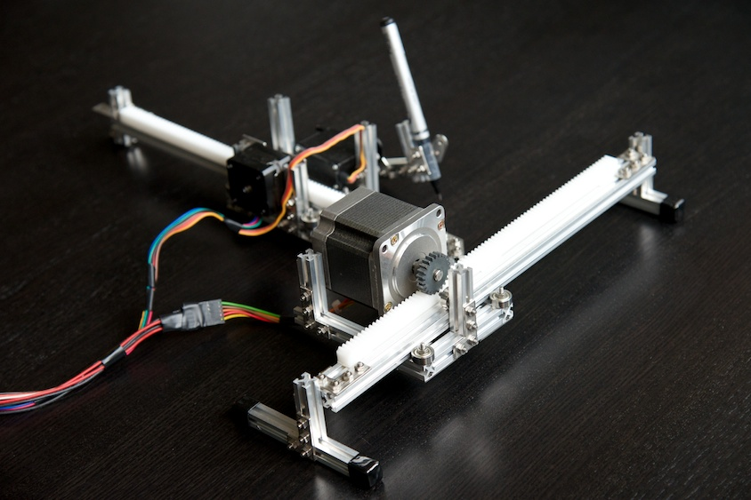
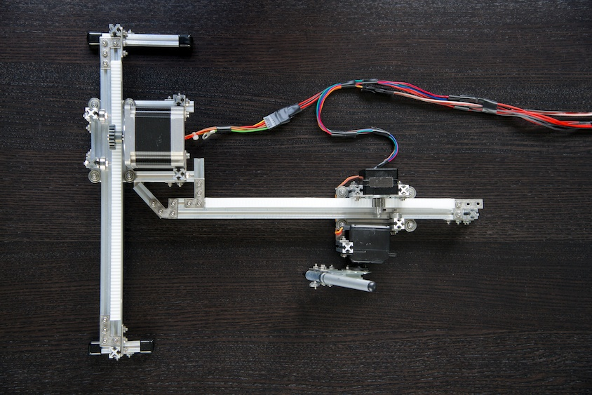
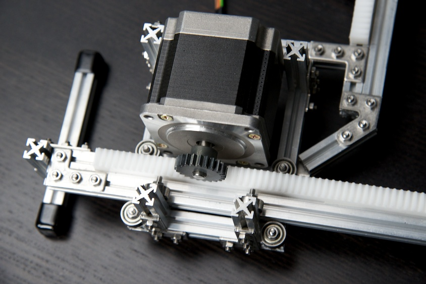
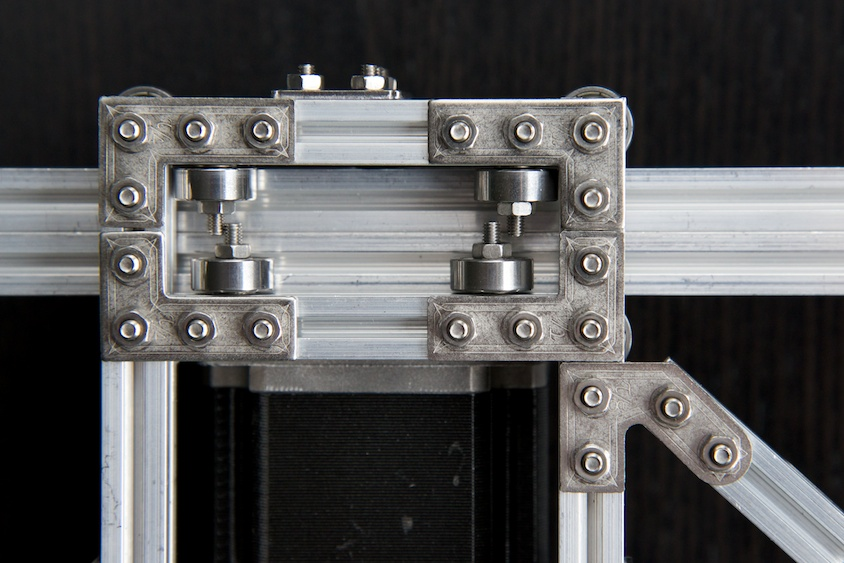
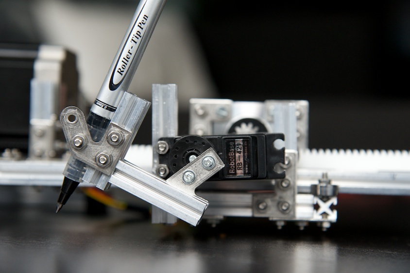
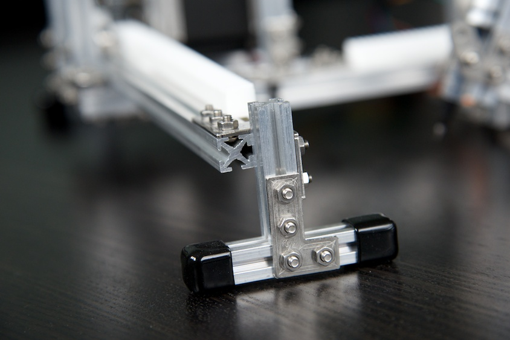

Live Plotter on Arduino and MakerBeams
Arduino based plotter that is controlled by drawing on an html canvas using websockets and serial communication over usb. Construction is powered by the awesome Maker Beams.
See it in action on YouTube.
See also my similar Polar Plotter project.
The project
This is an Arduino/Java project that lets you draw live on paper from an html5 canvas. This is a high level schematic:
Web Browser → WebSocket → Java Web Server → Serial over usb (9600bps) → Arduino board → Plotter
When you draw on the canvas in the browser, draw commands are sent to the server via a websocket. These commands include for example moveTo(x, y) and lineTo(x, y). The server then sends these commands to the Arduino board via usb. The Arduino board runs a program that handles the input and controls the plotter accordingly.
Multiple users can collaborate in the drawing, though only one user at a time may draw.
The drawing commands are stored on the server so that new users that take on where others left off.
This is what the plotter looks like

And from above

You draw on the canvas like so

And here it is in action
The hardware
The parts for this plotter are largely the same as that of my Polar Plotter. See that project for details.
The construction is entirely made up of Maker Beams. For this plotter I used pretty much their starter kit plus two sets of bearings and one set of vinyl caps.
A big stepper motor controls x-axis movement. A smaller stepper motor is controlling the y-axis action. It's a Pololu Stepper Motor 35*26mm. A RobotBase servo controls the pen.
This is a closeup of the sleigh moving on the x-axis arm, holding the y-axis arm. The sleigh is guided by eight bearings.

This is the sleigh from underneath.

The servo holding the pen. The arm construction makes pen tip movement pretty much vertical when touching the paper. If it is not, you'll get short lines when lowering the pen. The two screws on the vertical beam parallel to the pen allow for simple pen switching.

The feet have adjustable height to be able to hold the pen on the same height over the whole drawing area.

The end of the y-axis runs on a bearing as a wheel. This too has adjustable height.

The design
While being a traditional x/y plotter design, the plotter has some untraditional features.
- Frameless - Most plotters tend to have a complete frame. This makes them stable but also a bit bulky. This plotter has a moving arm which for the purpose is sturdy enough. And instead of putting a paper on the plotter, you put this plotter onto the paper.
- Gear racks - Many designs use timing belts. I like gear racks. This plotter uses two from Conrad.
Resolution
The plotter has a physical 0.02mm resolution. However, we use a 400x400px canvas and want to fit the coordinates in bytes for simplicity. Therefore, resolution is drastically reduced and output is pixellated, as can be seen in the video.
The code
The code is divided into two parts: The web server and the plotter controller.
The webserver
The webserver consists of a websocket servlet running in Jetty. It can be run without the plotter hooked up. Actually, serial output is disabled by default.
The server requires Java and Apache Maven to be installed. You also need the RXTX Library for serial communication. See http://www.arduino.cc/playground/Interfacing/Java for installation instructions.
To run the webserver, first checkout or download the project. Then do
$ cd canvas-server
$ mvn jetty:run
Then point your browser to http://localhost:8080/canvas/ and draw something. Open a second window to see history replayed. You can now draw from both windows, but one at a time. A busy indicator tells when someone is drawing. Touch devices are also supported. I've used iPhone and iPad.
Enabling serial output
To log to serial out, set ENABLE_SERIAL in SerialLoggingWebSocketServlet to true. You might need to edit the PORT_NAMES in the SerialCommunicator java class to match your platform. I'm on a Mac.
The plotter controller
The plotter controller is an Arduino program. I have it running on an Arduino UNO Rev3 board.
The program reads commands from the server via the serial input. Each command is three bytes: command|x|y, for example lineTo|80|120.
The read section in the) program looks like this:
if (Serial.available() > 3) {
byte type = Serial.read();
byte x = Serial.read();
byte y = Serial.read();
...
Other features
The live drawing is the main feature of this project but you can also hardcode drawing instructions into the Arduino program to for example draw draw text with a certain font. For more details on these features, please the project documentation for the Polar Plotter.
comments powered by Disqus